Os carros têm uma importância significativa no cotidiano das pessoas em todo o mundo. Eles são amplamente utilizados para o transporte pessoal e público, proporcionando mobilidade e comodidade para milhões de pessoas diariamente. Além disso, muitas pessoas têm uma paixão por carros, que pode ser vista em diferentes formas, como colecionar carros antigos, participar de corridas de automóveis, ou simplesmente admirar modelos de carros em revistas e exposições.
A história dos carros remonta ao final do século XIX, quando o motor a combustão interna foi inventado. O primeiro carro movido a gasolina foi construído em 1885 pelo engenheiro alemão Karl Benz. Desde então, a tecnologia automotiva evoluiu rapidamente, resultando em uma variedade de modelos e estilos de carros. A popularidade dos carros aumentou na década de 1920, quando se tornaram mais acessíveis e disponíveis para um público mais amplo. Nas décadas seguintes, os carros foram aprimorados com melhorias em segurança, eficiência de combustível, tecnologia e design.
Os carros se tornaram uma parte essencial da cultura moderna, refletindo a personalidade e estilo de vida das pessoas. Eles têm impacto econômico significativo na indústria automotiva e em outras áreas relacionadas, como serviços de reparo e manutenção, venda de peças e acessórios, e marketing. Apesar dos desafios ambientais e de segurança que cercam os carros, eles continuam sendo uma presença constante no cotidiano e na paixão de muitos entusiastas em todo o mundo
Tendo tudo isso em vista, separamos uma lista para os apaixonados por velocidade dos dez carros mais rapidos do planeta.
10° – Aston Martin DBS Superleggera 2020
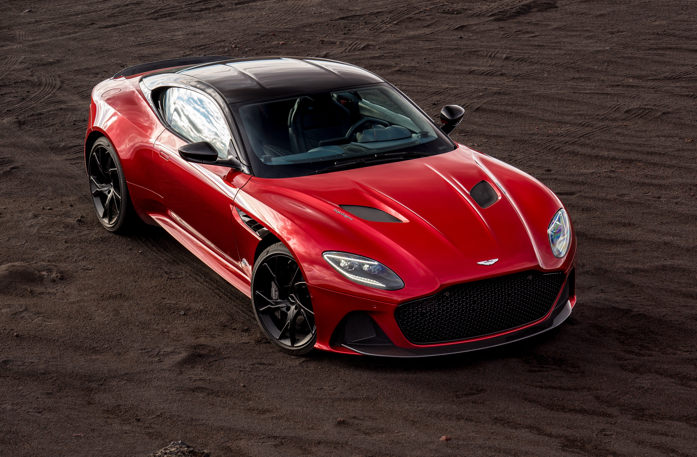 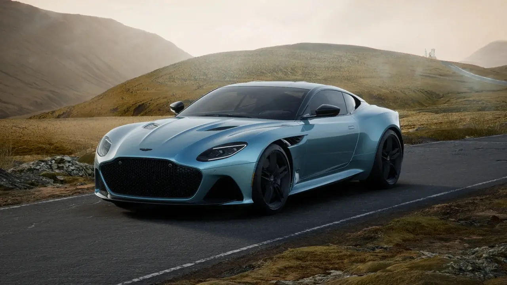 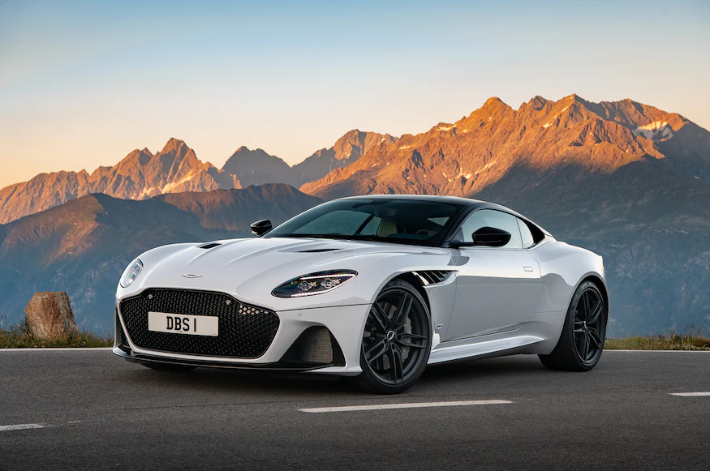
Com consumo médio de 12.4 litros/100km,de 0 a 100 km/h em 3.4 segundos, velocidade máxima de 340 km/h, um peso de 1768 kgs, o DBS Superleggera 5.2 V12 está equipado com um motor V de 12 cilindros turbocompressor, a Gasolina. Este motor produz uma potência máxima de 725 CV às 6500 rotações e um torque máximo de 900 Nm às 1800 rotações. A potência é transmitida à estrada através de um câmbio Automatic de 8 marchas, e o tipo de tração é traseira (RWD). Quanto às caracteristicas do chassis, responsáveis pelo comportamento em curva e conforto, o DBS Superleggera tem suspensão dianteira do tipo Independent Double Wishbones. Coil Springs. Anti-roll bar. e suspensão traseira do tipo Multilink. Coil Springs. Anti-roll bar.. As medidas de pneus são 265 / 35 em jantes de 21 polegadas à frente e 305 / 30 em jantes de 21 polegadas atrás. Na travagem, o sistema de travões do DBS Superleggera 5.2 V12 tem Discos Ventilados à frente e Discos Ventilados na traseira. O modelo DBS Superleggera é um carro do tipo Coupé produzido pelo fabricante Aston Martin, com 2 portas e 4 lugares.
O valor dele, em reais, é de aproximadamente 1,6 milhão.
9º – Ferrari 812 Superfast 2020
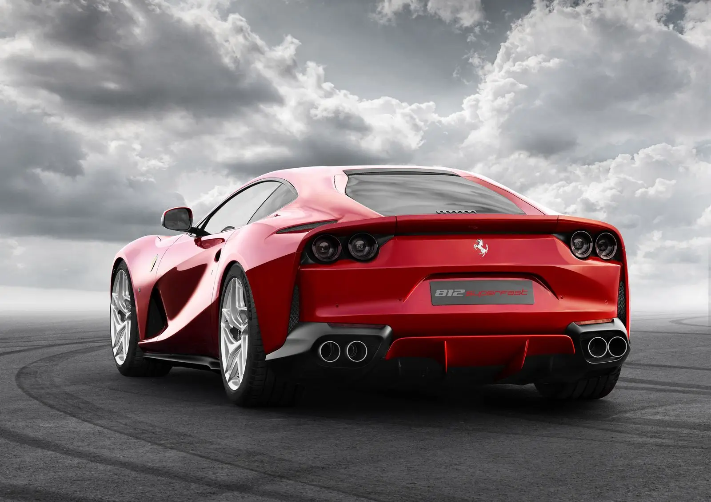 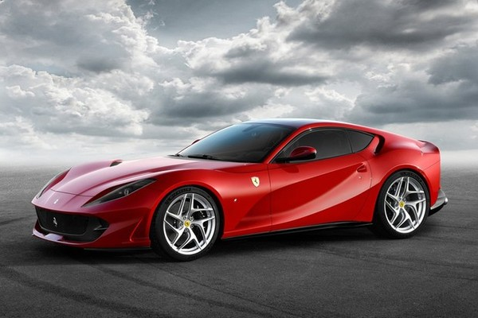 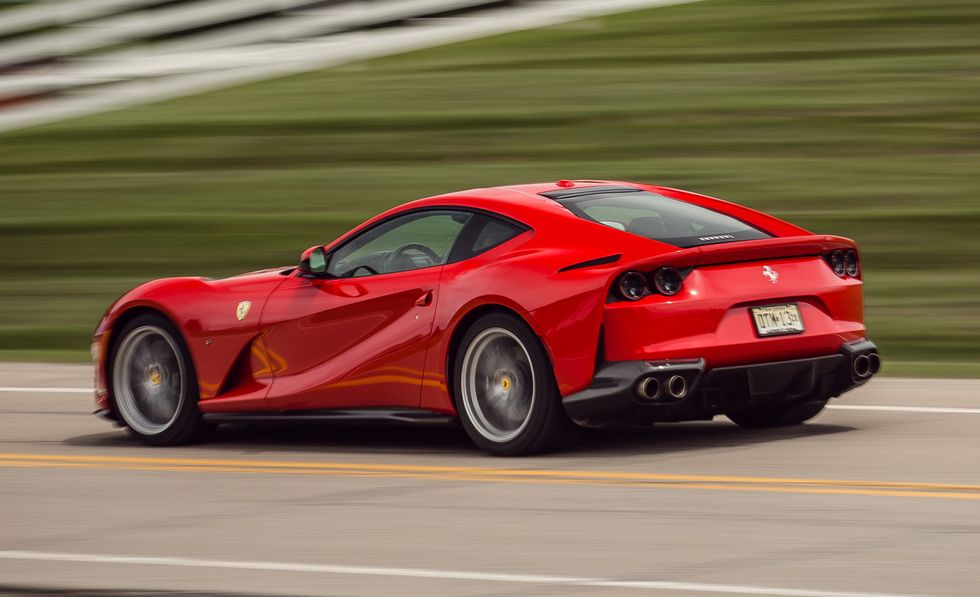 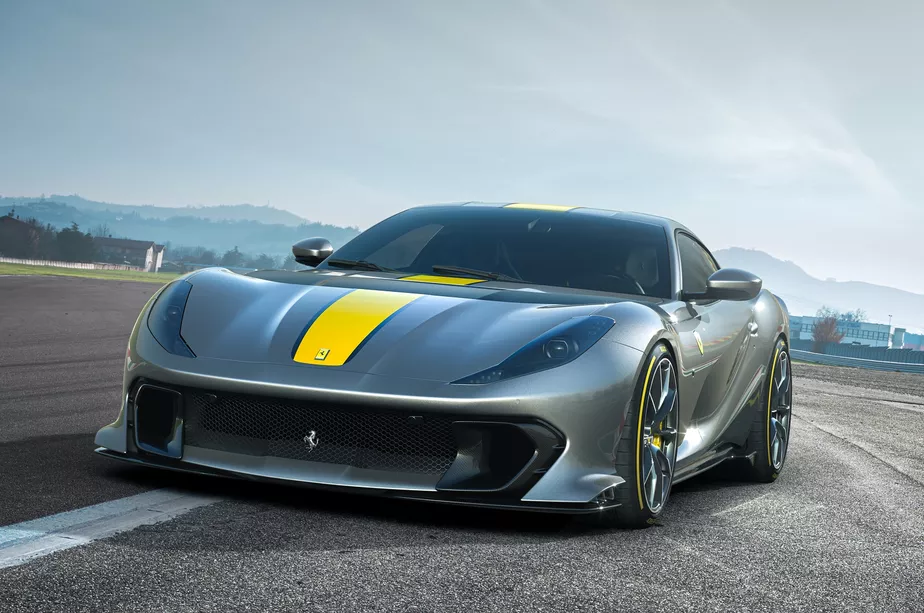Com consumo médio de 14.9 litros/100km, de 0 a 100 km/h em 2.9 segundos, um peso de 1525 kgs, o 812 Superfast está equipado com um motor V de 12 cilindros atmosférico, a Gasolina. Este motor produz uma potência máxima de 800 CV às 8500 rotações e um torque máximo de 718 Nm às 7000 rotações. A potência é transmitida à estrada através de um câmbio Automatic de 7 marchas, e o tipo de tração é traseira (RWD). Quanto às caracteristicas do chassis, responsáveis pelo comportamento em curva e conforto, o 812 Superfast Na travagem, o sistema de travões do 812 Superfast tem Discos Ventilados à frente e Discos Ventilados na traseira. O modelo 812 Superfast é um carro do tipo Coupe produzido pelo fabricante Ferrari, com 3 portas e 2 lugares.
O valor dele, em reais, é de aproximadamente 1,7 milhão.
8° – McLaren 720S 2020
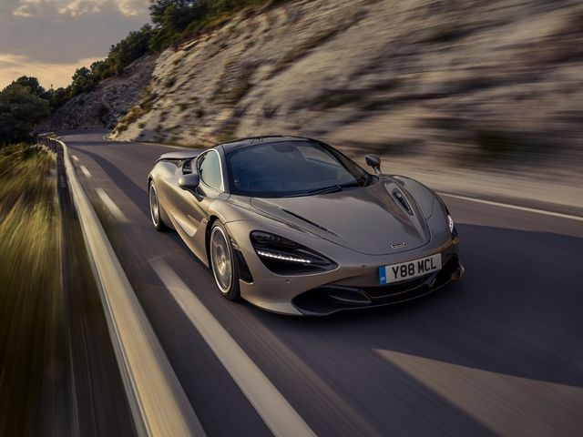 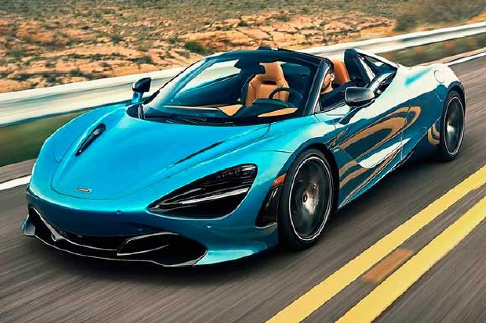 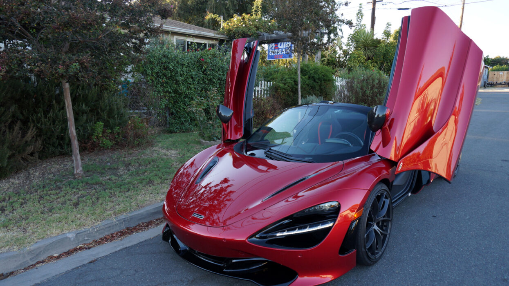 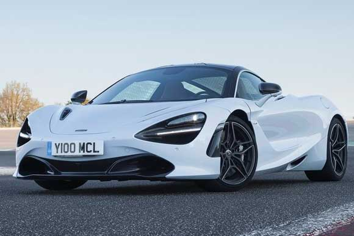Com consumo médio de 10.8 litros/100km,de 0 a 100 km/h em 2.9 segundos, velocidade máxima de 341 km/h, um peso de 1490 kgs, o 720S Spider está equipado com um motor V de 8 cilindros turbocompressor, a Gasolina. Este motor produz uma potência máxima de 720 CV às 7250 rotações e um torque máximo de 770 Nm às 5500 rotações. A potência é transmitida à estrada através de um câmbio Dualclutch Automatic de 7 marchas, e o tipo de tração é traseira (RWD). Quanto às caracteristicas do chassis, responsáveis pelo comportamento em curva e conforto, o 720S Spider tem suspensão dianteira do tipo Independent Double Wishbones. Coil Springs. Anti-roll bar. e suspensão traseira do tipo Independent Double Wishbones. Coil Springs. Anti-roll bar.. As medidas de pneus são 245 / 35 em jantes de 19 polegadas à frente e 305 / 30 em jantes de 20 polegadas atrás. Na travagem, o sistema de travões do 720S Spider tem Discos à frente e Discos Ventilados na traseira. O modelo 720S Spider é um carro do tipo Cabrio produzido pelo fabricante McLaren, com 2 portas e 2 lugares.
O valor dele, em reais, é de aproximadamente 1,5 milhão.
7° – Ford GT 2020
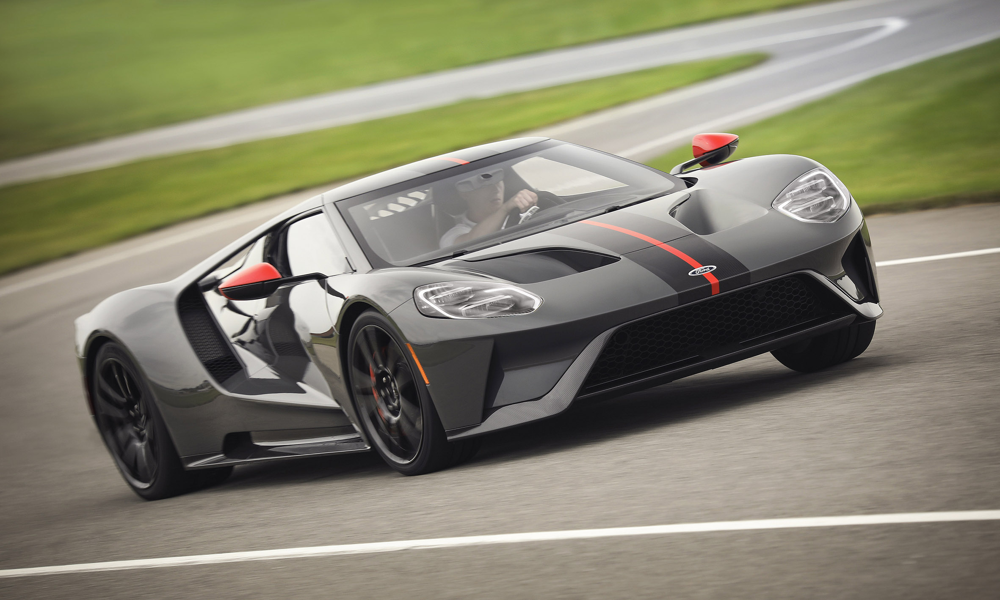 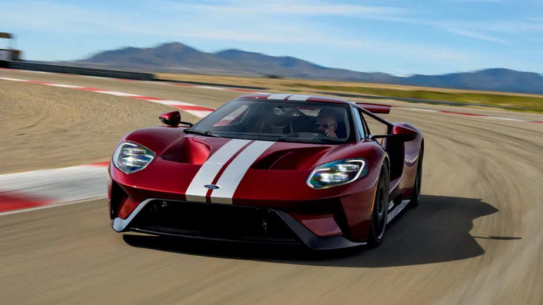 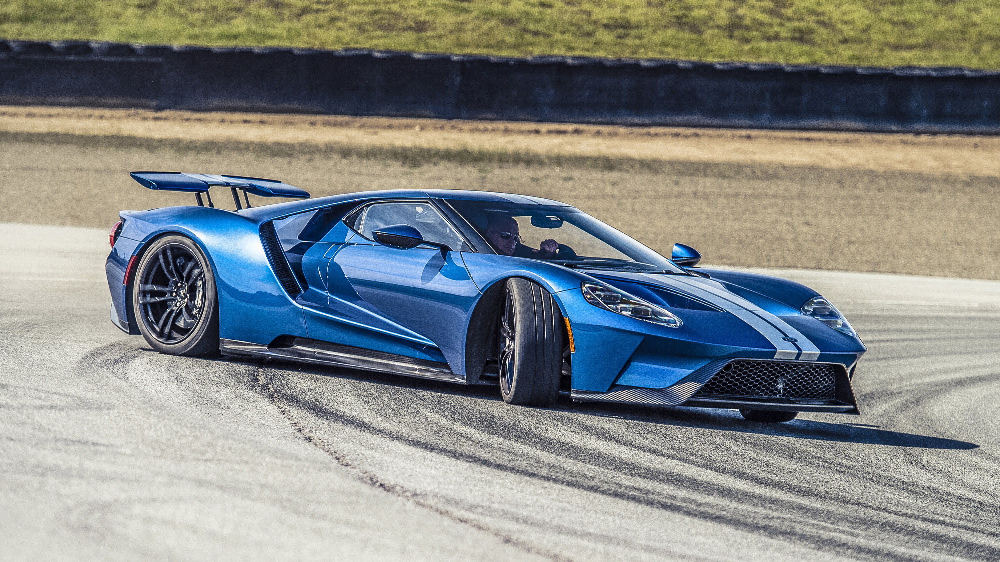 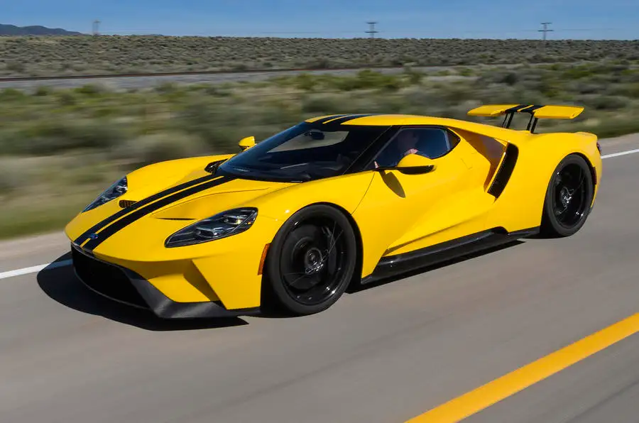Com consumo médio de 18 litros/100km, de 0 a 100 km/h em 3.0 segundos, um peso de 1360 kgs, o Ford GT de 2020 está equipado com um motor V6 twin-turbo a gasolina. Este motor produz uma potência máxima de 660 CV às 6250 rotações e um torque máximo de 746 Nm às 5900 rotações. A potência é transmitida à estrada através de um câmbio Automático de 7 marchas, e o tipo de tração é traseira (RWD). Quanto às características do chassis, responsáveis pelo comportamento em curva e conforto, o Ford GT de 2020 possui suspensão pushrod com amortecedores ajustáveis e sistema de freios de carbono-cerâmica com pinças Brembo de seis pistões na frente e quatro pistões na traseira. O modelo Ford GT de 2020 é um carro do tipo Coupe produzido pelo fabricante Ford, com 2 portas e 2 lugares.
O valor dele, em reais, é de aproximadamente 9 milhões.
6º – Lamborghini Aventador SVJ
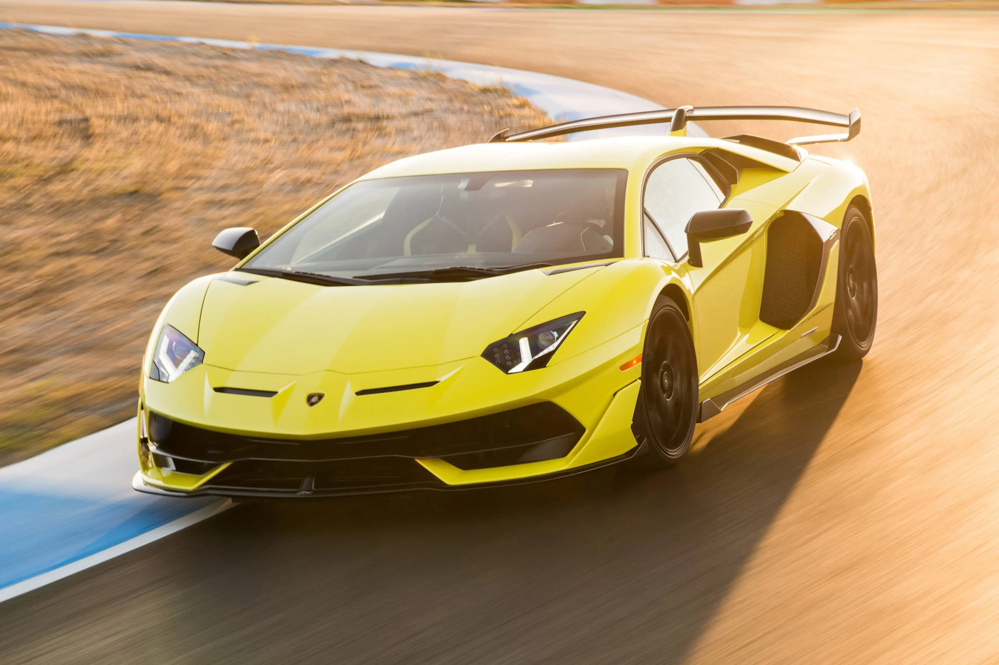 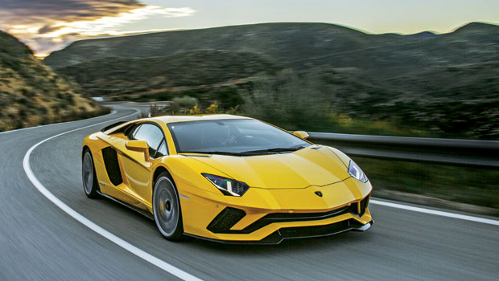 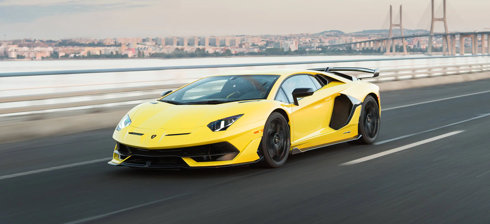 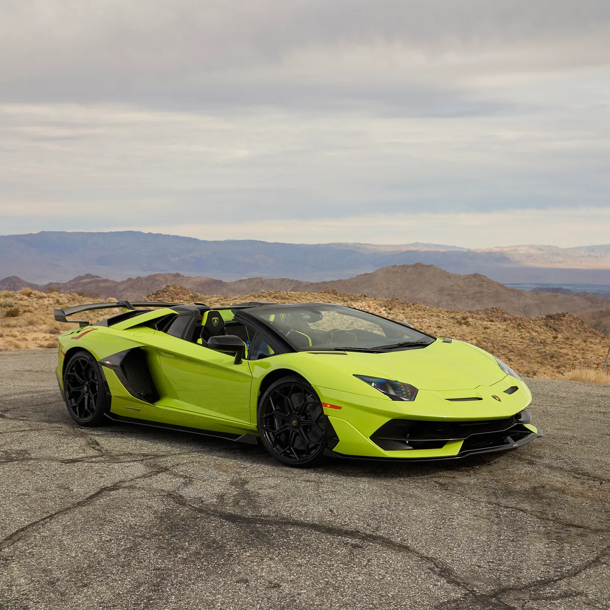De 0 a 100 km/h em 2.8 segundos, velocidade máxima de 350 km/h, um peso de 1708 kgs, o Aventador SVJ está equipado com um motor V de 12 cilindros atmosférico, a Gasolina. Este motor produz uma potência máxima de 770 CV às 8400 rotações e um torque máximo de 720 Nm às 6750 rotações. A potência é transmitida à estrada através de um câmbio Automatic de 7 marchas, e o tipo de tração é total / integral (AWD). Quanto às caracteristicas do chassis, responsáveis pelo comportamento em curva e conforto, o Aventador tem suspensão dianteira do tipo Independent Double Wishbones. Coil Springs. Anti-roll bar. e suspensão traseira do tipo Independent Double Wishbones. Coil Springs. Anti-roll bar.. As medidas de pneus são 255 / 30 em jantes de 20 polegadas à frente e 355 / 25 em jantes de 21 polegadas atrás. Na travagem, o sistema de travões do Aventador SVJ tem Discos Ventilados à frente e Discos Ventilados na traseira. O modelo Aventador é um carro do tipo Coupé produzido pelo fabricante Lamborghini, com 2 portas e 2 lugares,
O valor dele, em reais, é de aproximadamente 8,2 milhões.
5º – McLaren Speedtail 2021
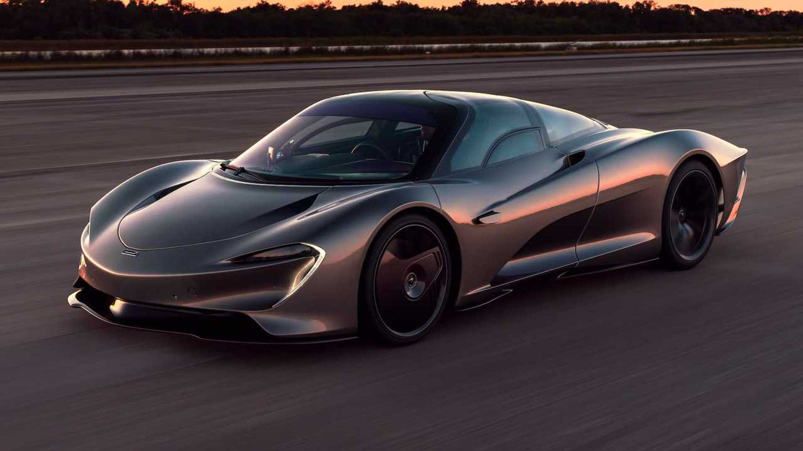 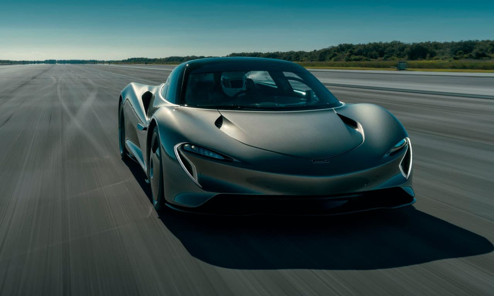 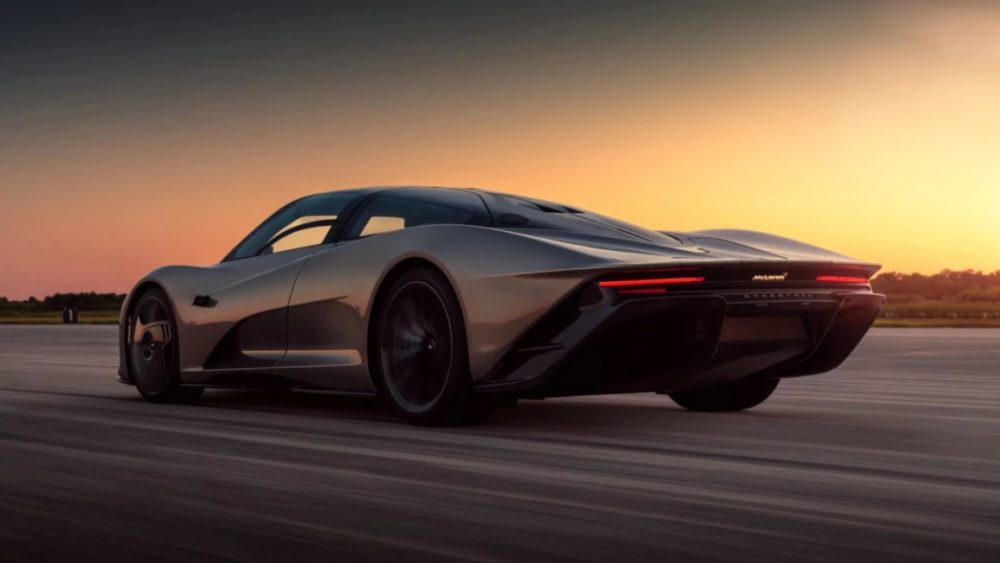 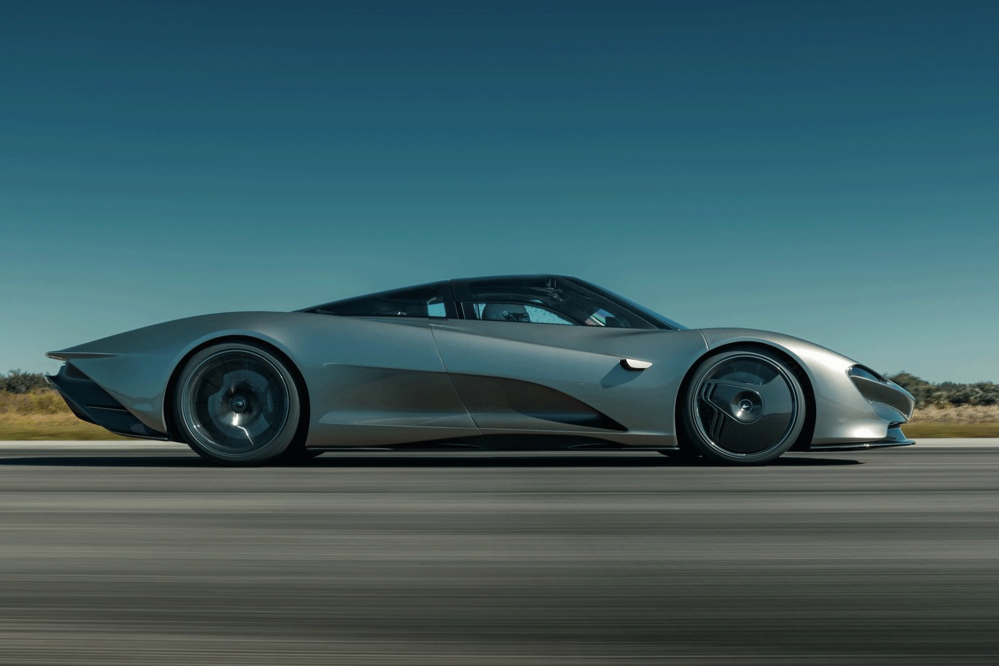0 aos 100 km/h em 3.0 segundos, velocidade máxima de 403 km/h, um peso de 1597 kgs, o Speedtail está equipado com um motor V de 8 cilindros turbocompressor, a Híbrido / Gasolina, com o código de motor McLaren M840T. A potência é transmitida à estrada através de um câmbio Dualclutch Automatic de 7 marchas, e o tipo de tração é traseira (RWD). Quanto às caracteristicas do chassis, responsáveis pelo comportamento em curva e conforto, o Speedtail Na travagem, o sistema de travões do Speedtail tem Discos Ventilados à frente e Discos Ventilados na traseira. O modelo Speedtail é um carro do tipo Coupé produzido pelo fabricante McLaren,
O valor dele, em reais, é de aproximadamente 40,5 milhões
4º – Bugatti Chiron 2020
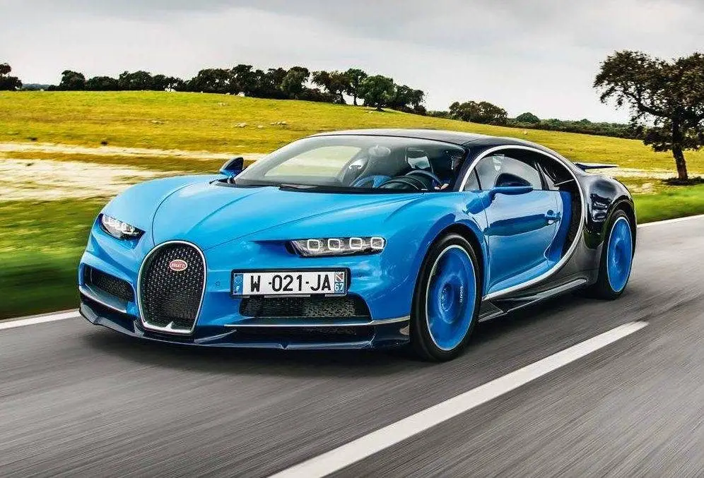 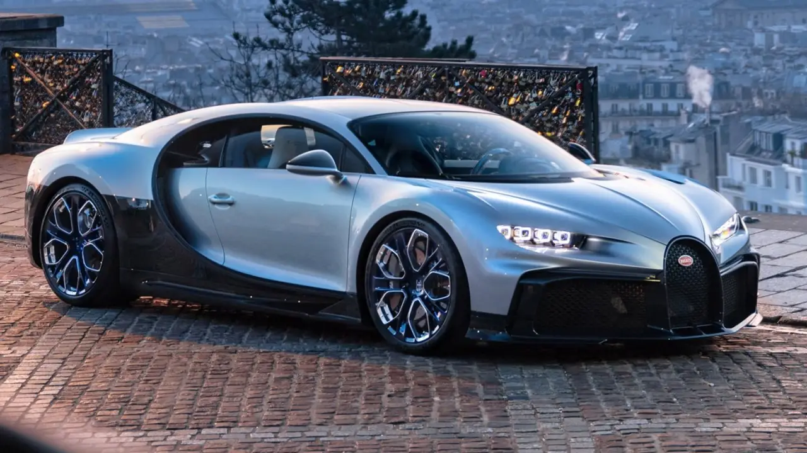 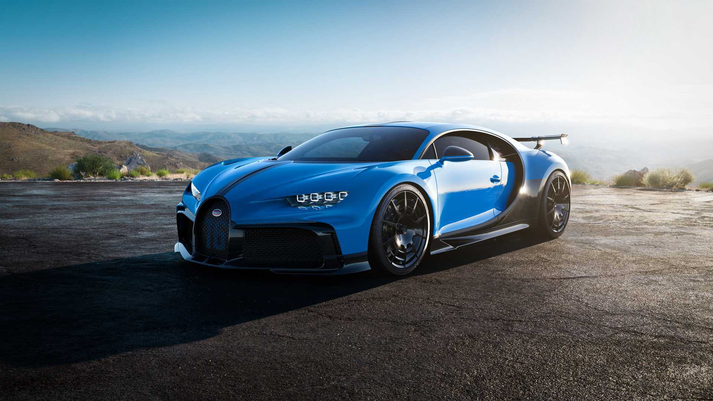 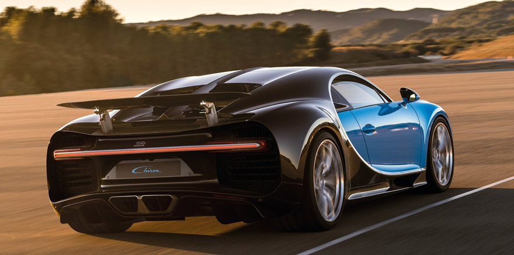De 0 a 100 km/h em 2.5 segundos, velocidade máxima de 420 km/h, um peso de 2043 kgs, o Chiron está equipado com um motor W de 16 cilindros turbocompressor, a Gasolina. Este motor produz uma potência máxima de 1500 CV às 6700 rotações e um torque máximo de 1600 Nm às 2000-6000 rotações. A potência é transmitida à estrada através de um câmbio Automatic de 7 marchas, e o tipo de tração é total / integral (AWD). Quanto às caracteristicas do chassis, responsáveis pelo comportamento em curva e conforto, o Chiron tem suspensão dianteira do tipo Coil springs. e suspensão traseira do tipo Coil springs. . As medidas de pneus são 285 / 30 em jantes de 20 polegadas à frente e 355 / 25 em jantes de 21 polegadas atrás. Na travagem, o sistema de travões do Chiron tem Discos Ventilados à frente e Discos Ventilados na traseira. O modelo Chiron é um carro do tipo Coupe produzido pelo fabricante Bugatti, com 2 portas e 2 lugares,
O valor dele, em reais, é de aproximadamente 30,2 milhões.
3º – Bugatti Chiron Super Sport 300+
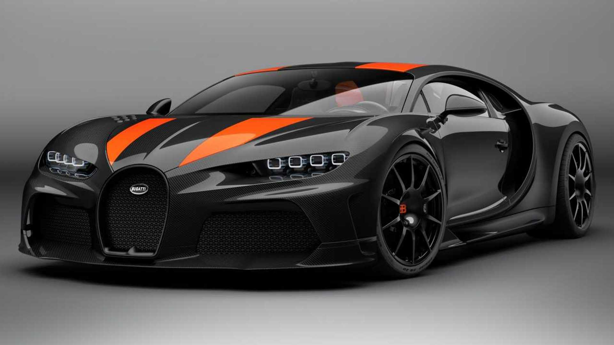 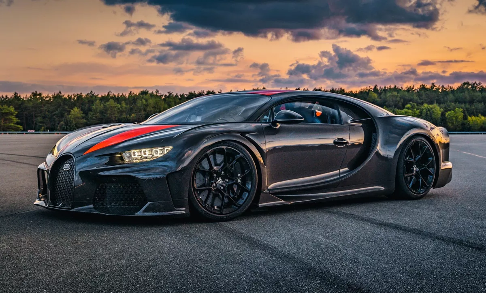 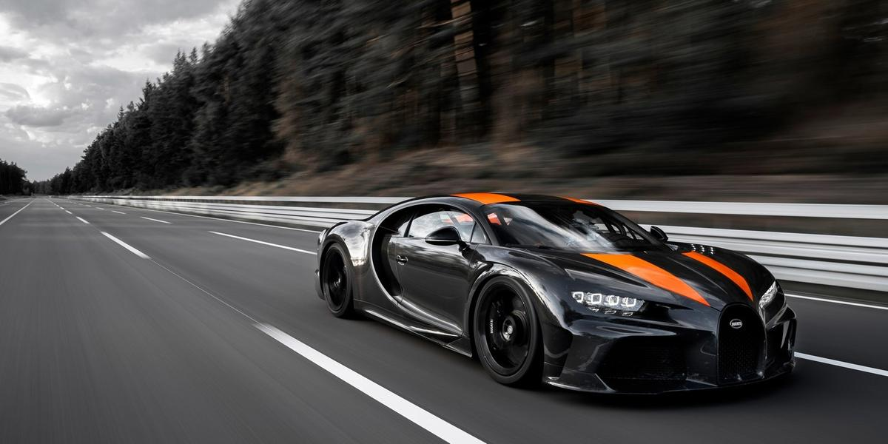 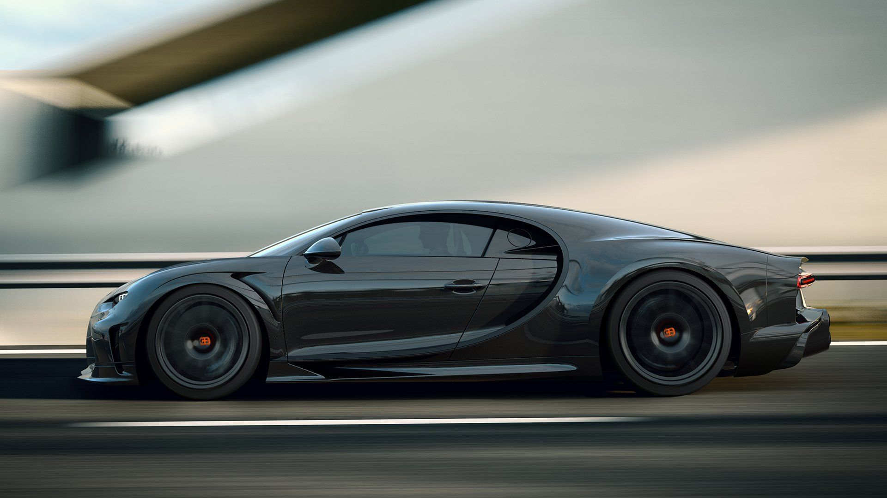Com consumo médio de 22.5 litros/100km, de 0 a 100 km/h em 2.0 segundos, velocidade máxima de 490. km/h, o Chiron Super Sport 300+ está equipado com um motor W de 16 cilindros turbocompressor, a Gasolina. Este motor produz uma potência máxima de 1599 CV às rotações e um torque máximo de Nm às rotações. A potência é transmitida à estrada através de um câmbio Dualclutch Automatic de 7 marchas, e o tipo de tração é total / integral (AWD). Quanto às caracteristicas do chassis, responsáveis pelo comportamento em curva e conforto, o Chiron tem suspensão dianteira do tipo Coil springs. e suspensão traseira do tipo Coil springs. . Na travagem, o sistema de travões do Chiron Super Sport 300+ tem Discos Ventilados à frente e Discos Ventilados na traseira. O modelo Chiron é um carro do tipo Supercar produzido pelo fabricante Bugatti, com 2 portas e 2 lugares.
O valor dele, em reais, é de aproximadamente 30,2 milhões de reais.
2º – Koenigsegg Agera RS
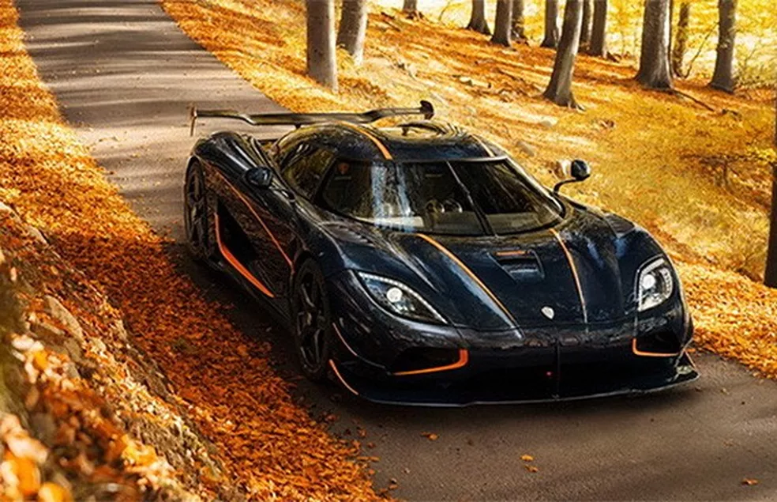 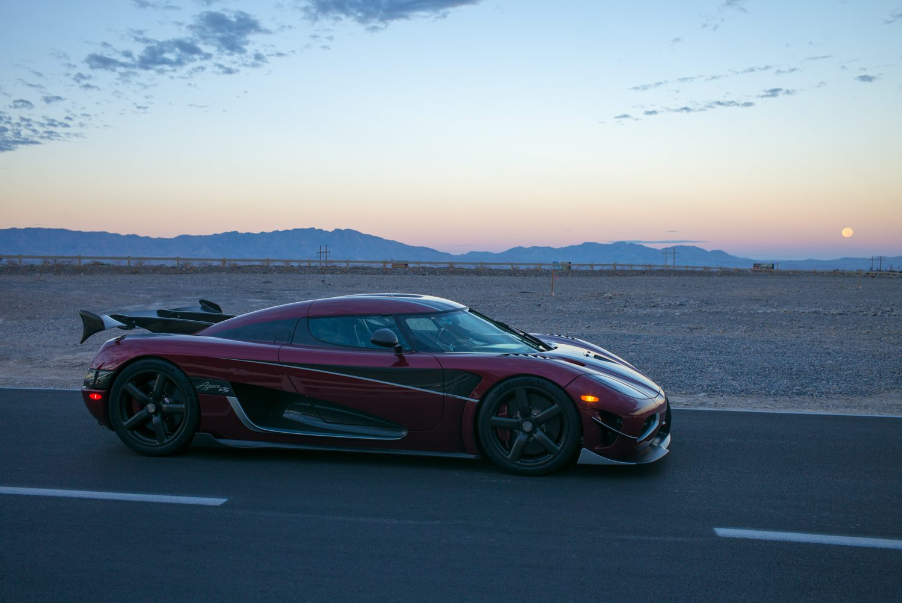 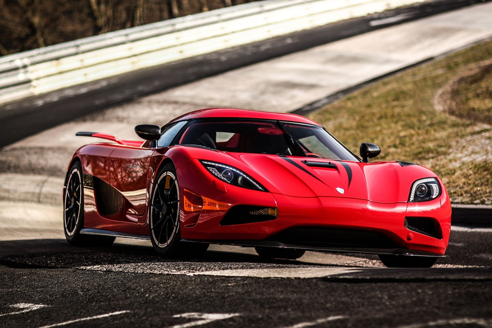 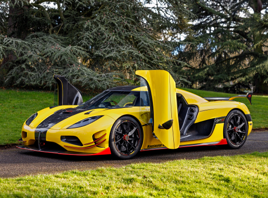Com consumo médio de 22 litros/100km, de 0 a 100 km/h em 3.2 segundos, velocidade máxima de 400 km/h, um peso de 1305 kgs, o Agera RS está equipado com um motor V de 8 cilindros , a Gasolina ou Etanol. Este motor produz uma potência máxima de 1018 CV às 7200 rotações e um torque máximo de 1060 Nm às 6100 rotações. A potência é transmitida à estrada através de um câmbio Manual de 6 marchas, e o tipo de tração é traseira (RWD). Quanto às caracteristicas do chassis, responsáveis pelo comportamento em curva e conforto, o Agera tem suspensão dianteira do tipo Coil springs. e suspensão traseira do tipo Coil springs. . As medidas de pneus são 255 / 35 em jantes de 19 polegadas à frente e 335 / 30 em jantes de 20 polegadas atrás. Na travagem, o sistema de travões do Agera RS tem Discos Ventilados à frente e Discos Ventilados na traseira. O modelo Agera é um carro do tipo Coupe produzido pelo fabricante Koenigsegg.
O valor dele, em reais, é de aproximadamente 8 milhões.
1º – SSC Tuatara
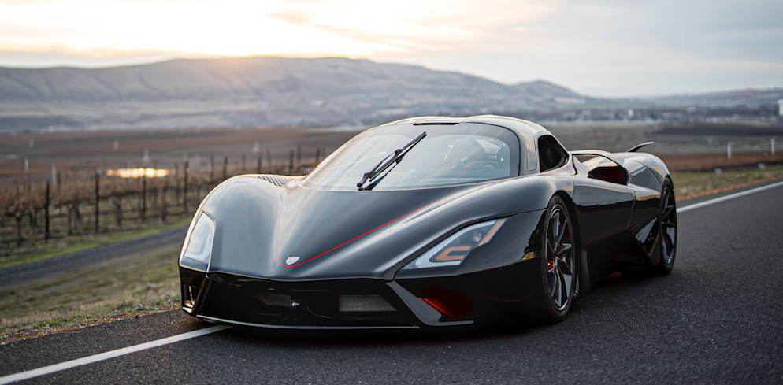 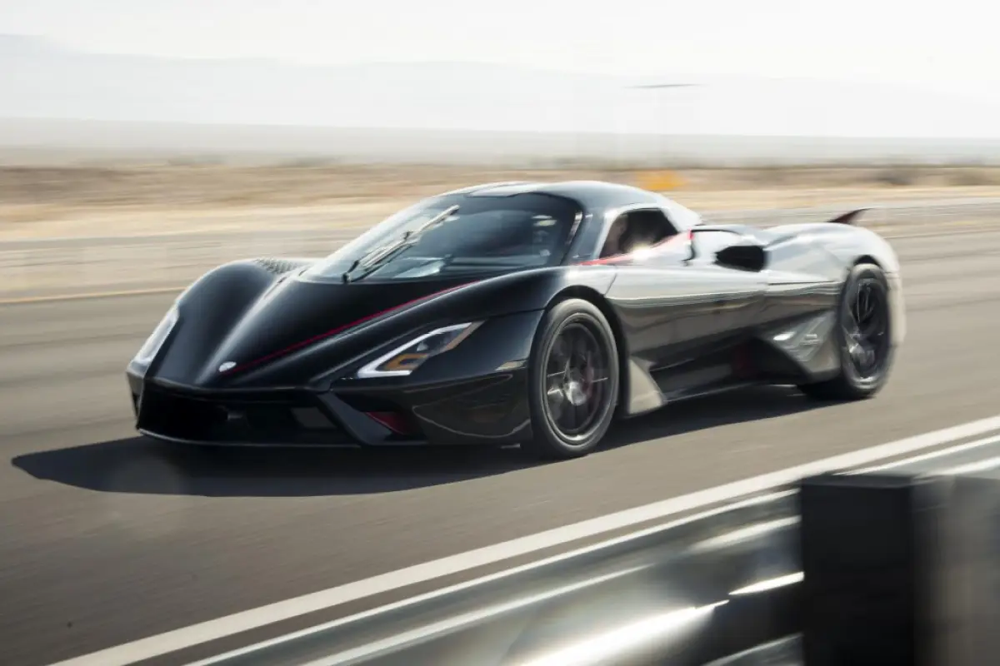 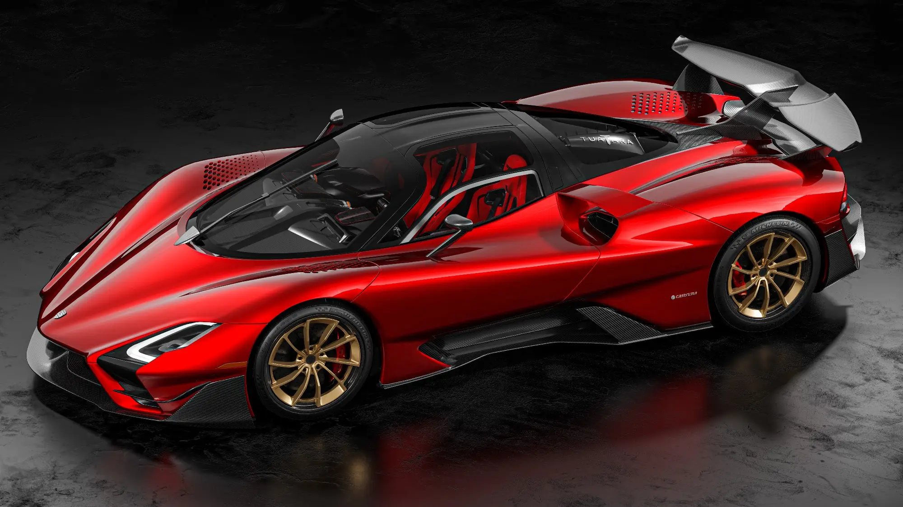
Com consumo médio de 22.8 litros/100km, de 0 a 100 km/h em 2.5 segundos, um peso de 1247 kgs, o SSC Tuatara está equipado com um motor V8 twin-turbo a gasolina. Este motor produz uma potência máxima de 1750 CV às 8800 rotações e um torque máximo de 1835 Nm às 6800 rotações. A potência é transmitida à estrada através de um câmbio Automático de 7 marchas, e o tipo de tração é traseira (RWD). Quanto às características do chassis, responsáveis pelo comportamento em curva e conforto, o SSC Tuatara possui suspensão pushrod com ajuste de amortecimento em cinco configurações e sistema de freios de carbono-cerâmica com pinças Brembo de seis pistões na frente e quatro pistões na traseira. O modelo SSC Tuatara é um carro do tipo Coupe produzido pelo fabricante SSC North America, com 2 portas e 2 lugares.
O valor dele, em reais, é de aproximadamente 9 milhões.